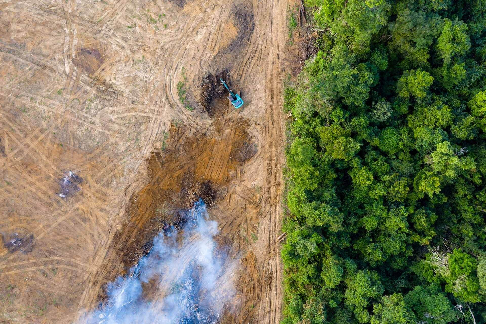
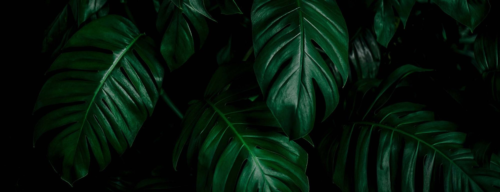

Step 1:
Create a fundraiser
Create a fundraiser or join an existing one to start fundraising. It takes just a few seconds to get going.
Start fundraising
The Need
Every day, hundreds of acres of precious rainforest habitat are destroyed in the name of development. We need your help to stop it. With $1M in donor-backed funds, we can purchase a conservation easement that will protect 100,000 acres of rainforest habitat.
Getting Started
Create a fundraiser or join an existing one to start fundraising. It takes just a few seconds to get going.
Start fundraisingIt's time to promote your fundraiser. Use your fundraiser's share link to engage friends and family.
Keep track of your fundraiser's progress and see who's showing support through your dashboard.
Leading by Example
Fundraisers everywhere are coming together to protect the rainforest in big ways. See who's leading the pack and search for fundraisers that you can contribute to.
People everywhere are rallying to protect the rainforest—people like you. Play your part by fundraising on behalf of ROPSI.
Yes! Once you create your fundraiser, you'll receive an email with a link that you can use to invite people to join your fundraiser as team members.
Absolutely. ROPSI is a registered charity. Donations made to our organization are tax deductible and we send donation receipts to the people who support your fundraiser.
Yes. You can extend your fundraiser's goal through Donor Portal. And even if your goal is reached, your supporters can continue to donate to your fundraiser.
You sure can. Log in to Donor Portal to see your fundraiser's stats, including who's donated, where they're giving from, and how close you are to reaching your goal.
Donate instead. Your support helps us secure 100,000 acres of endangered rainforest habitat.
How You Can Help
Fundraise with friends and family
We need your help to raise funds for the $1M conservation easement. The best way to show your support is to engage your network of friends and family through fundraising. Create a fundraiser or join an existing one to get started.
